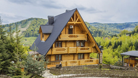

Готелі в Карпатах
В горах ви можете відпочити в котеджі після втомної подорожі
Про Карпати
Карпати - велика і своєрідна за своїми природними властивостями гірська країна, частина поясу молодих складчастих альпійських споруд.
Загальна площа Карпат становить 188 тис.кв.км.
Це середньовисокі гори, найвищі масиви яких рідко перевищують 2500 м.
Загальна довжина Карпатської дуги понад 1300 км. Від Дунаю біля м.Братіслави починаються Західні, широтно орієнтовані Карпати.
Центральним масивом їх є Високі Татри з максимальними (2663 м, г.Герлаховскі-Штіт) для всіх Карпат висотами.
У верхів`ях річок Дунаєць і Попрад дуга гір повертає на південний схід.
Тут починається найбільш знижена і звужена частина Карпат - Східні, або Лісисті, Карпати.
Їх вершини рідко перевищують 2000 м. Східні Карпати складаються із Східних Бескидів, Українських Карпат і Молдово-Семиградських Карпат.
Найвищий масив їх - Роднянські Альпи - піднімається до висоти 2305 м (г. П`єтрос ). Біля р.Прахови дуга Карпат різко вигинається на південь, а потім на захід.
Це Південні Карпати, або Трансільванські Альпи, вершини яких сягають понад 2500 м.
Закінчуються Карпати Банатськими горами, які підходять до самого Дунаю, який відділяє Карпати від Балканських гір. .
Більше пр гори
Карпати поділяються на Західні, Східні і Південні.
Західні - розташовані на території Словаччини, Чехії, Польщі і, частково, Угорщини, де й є найвища точка Карпат - гора Герлах (2655 м).
Південні - меридіально розкинулися на території Румунії.
Східні (за винятком Східних Бескидів, що у Словаччині та Польщі, а також Семиградських гір, що у Румунії) - на території України..
Середня висота Українських Карпат - %0 м. На них припадає 10,3% площі усіх Карпат і 3,5% території України.
Простягаються вони з північного заходу на південний схід майже на 280 км при середній ширині - % км.
Найвища вершина - гора Говерла (2061 м).
В межах України Карпати діляться на: зовнішні (Скибові), куди входять Бескиди, Горгани і Покутсько-Буковинські Карпати;
центральні або Верховинські; внутрішні або Полонинсько-Чорногірські.
(Більше можна дізнатись тут Wikipedia).
|